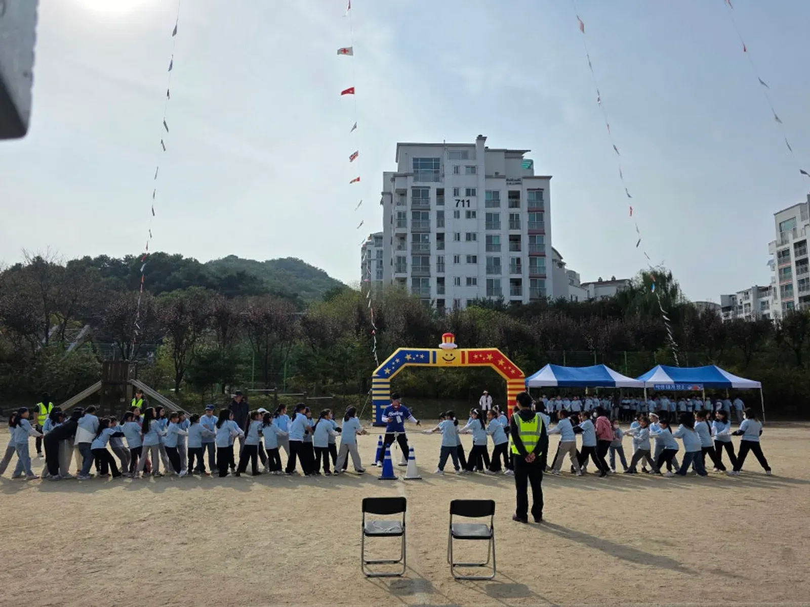
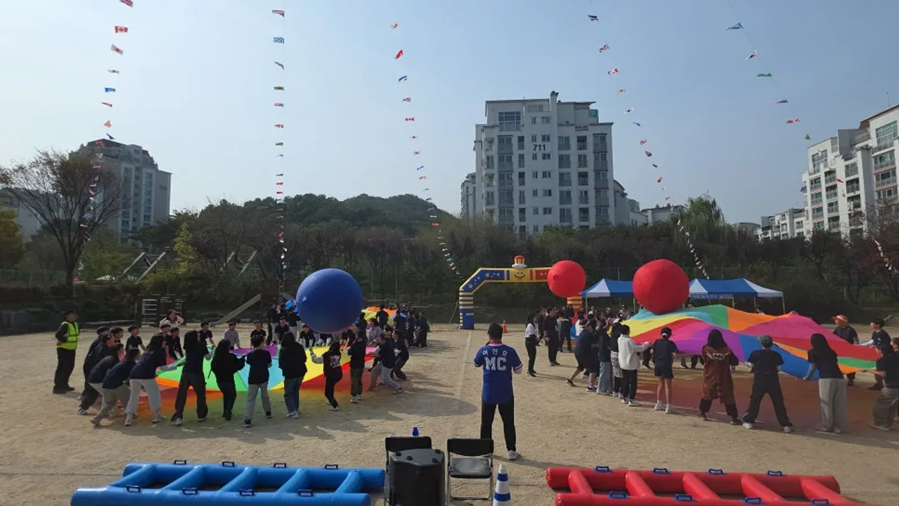
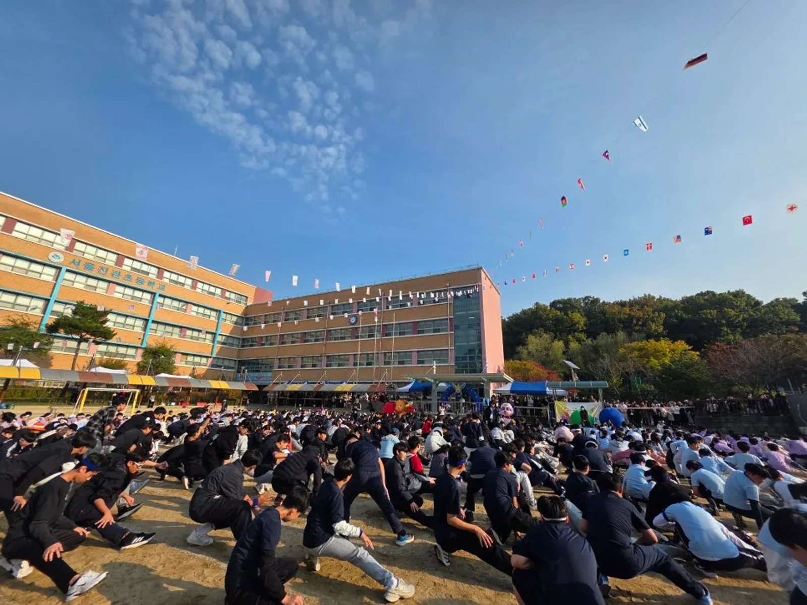

남양주 행사 준비 · 2026년 10월 28일
남양주 어린이집 운동회 준비 — 유아 종목 · 학부모 동선 · 안전
남양주 어린이집 운동회는 초등학교 운동회와 준비가 다릅니다. 아이들이 기다리는 시간을 가장 짧게, 부모님과 함께하는 순서를 가장 많이 두는 것이 핵심입니다. 유아는 집중하는 시간이 짧고, 부모님은 내 아이를 가까이서 보고 싶어 하기 때문입니다. 원장님과 선생님이 업체와 상담하기 전에 정해 두면 좋은 것들을 정리했습니다.

- 유아 운동회는 한 종목을 짧게, 반별 대기 시간을 최소로 짭니다.
- 부모님과 아이가 함께하는 종목을 넣으면 관람석이 무대가 되고 운동회가 하나로 묶입니다.
- 아이 대기 구역과 학부모 관람 구역, 사진 찍는 자리를 미리 나눠야 경기장이 붐비지 않습니다.
- 햇볕 · 바람 · 비에 대비해 그늘 천막과 실내 대체 공간을 함께 확인합니다.
1. 남양주 어린이집 운동회, 상담 전에 정할 것
남양주(경기도 남양주시)는 힐링엔터테인먼트 노원 본사에서 남양주시청까지 차로 약 20분 · 17.4km(막히지 않을 때) 거리입니다. 남양주 안에서도 (다산동 · 별내동 · 진접읍 · 화도읍 · 와부읍 · 평내동 · 호평동 등) 행사장마다 거리가 다르므로, 장소 주소를 알려 주시면 도착 시각을 넉넉히 잡아 아이들이 오기 전에 세팅을 마칩니다.
| 정할 것 | 예 | 영향 |
|---|---|---|
| 반 · 나이 구성 | 만 2세 반부터 7세 반까지 | 종목 난이도 · 순서 |
| 장소 | 원 마당 · 근처 학교 운동장 · 실내 체육관 | 음향 · 날씨 대비 |
| 부모님 참여 | 관람만 · 함께하는 종목 · 가족 대항 | 관람 구역 · 종목 |
| 진행 시간 | 오전 두 시간 안팎 | 종목 수 |
| 원에 있는 용품 | 공 · 훌라후프 · 콘 · 매트 | 가져올 게임도구 |
2. 어린이집 운동회 유아 종목 고르기
유아 종목은 규칙이 한 문장으로 설명되고, 결과가 바로 눈에 보이는 것이 좋습니다. 이기고 지는 것보다 끝까지 해냈다는 경험이 중요하므로, 모든 아이가 결승선에 들어오는 종목 위주로 짭니다.
| 나이 | 종목 예 | 진행 포인트 |
|---|---|---|
| 어린 반 | 공 굴리며 걷기 · 기차 놀이 | 선생님이 함께 걷는다 |
| 중간 반 | 큰 공 함께 옮기기 · 대형 천 게임 | 반 전체가 한 팀 |
| 큰 반 | 짧은 이어달리기 · 장애물 통과 | 출발선 · 반환점 표시 |
| 가족 종목 | 부모님과 함께 달리기 · 가족 줄다리기 | 관람석에서 바로 나오게 |
| 마무리 | 다 같이 율동 · 메달 걸어 주기 | 모두가 받는 순서 |

3. 아이 대기 · 학부모 관람 · 사진 자리 나누기
어린이집 운동회에서 경기장이 붐비는 가장 큰 이유는 부모님이 사진을 찍으러 경기장 안으로 들어오기 때문입니다. 탓할 일이 아니라 자리를 미리 마련하면 됩니다. 결승선 옆에 사진 찍는 자리를 따로 정해 두면 경기장이 훨씬 안전해집니다.
- 반별 대기 자리는 그늘 아래, 경기장과 가까운 쪽에 둡니다.
- 학부모 관람 구역은 경기장 둘레에 선을 그어 표시합니다.
- 결승선 옆에 '사진 찍는 자리'를 정해 안내합니다.
- 가족 종목 때는 관람 구역에서 바로 나와 출발선으로 가는 길을 정해 둡니다.
- 화장실 · 물 마시는 곳 · 미아 안내 위치를 오프닝 때 MC가 알려 드립니다.

4. 안전과 날씨 — 작은 아이일수록 미리
유아 운동회는 넘어지는 일이 잦습니다. 달리는 코스에는 돌이나 패인 곳이 없는지 행사 전에 함께 살피고, 종목마다 아이 곁을 지키는 선생님 · 진행 보조 요원을 둡니다. 대표 MC 이현호는 국민안전교육 전문인력과 KEMA CPR · AED 자격을 갖고 있습니다.
- 그늘: 대기 자리와 관람석에 그늘 천막을 둡니다.
- 물: 종목 사이 물 마시는 시간을 순서표에 넣습니다.
- 구급: 원에 있는 구급함 위치를 모든 선생님이 알게 합니다.
- 비 · 바람: 실내 체육관이나 강당을 쓸 수 있는지, 날짜를 미룰 기준은 무엇인지 미리 정합니다.
5. 견적 문의 항목
자동 견적서에서 아래 항목을 골라 날짜 · 장소 · 반 수와 함께 보내 주시면 확인 후 견적을 안내드립니다. 금액은 행사마다 달라 견적서에 나오지 않습니다.
| 항목 | 내용 |
|---|---|
| 학교 운동회 · 체육대회 | 어린이집 · 유치원 운동회 포함 |
| 대표 MC 이현호 진행 | 운동회 전체 진행 |
| 체육대회 게임도구 | 대형 공 · 대형 천 등 |
| 진행 보조 · 운영 스탭 | 경기 진행 · 이동 안내 |
| 음향 (중형) | 원 마당 · 체육관 |
| 천막 | 대기 자리 · 관람석 그늘 |
남양주 지역 안내는 남양주 행사 안내에 있습니다. 초등학교 운동회는 노원 초등학교 운동회 업체 글에 따로 정리했습니다.
자주 묻는 질문
원 마당이 좁아도 운동회를 할 수 있나요?
마당 크기에 맞춰 종목을 고르고, 반별로 나눠 차례로 진행하면 됩니다. 마당 사진을 보내 주시면 배치를 함께 봅니다.
부모님 참여 종목은 몇 개가 좋나요?
원마다 다르지만, 처음과 끝에 하나씩 두면 부모님이 끝까지 자리를 지키고 아이들도 신이 납니다. 진행 시간에 맞춰 정합니다.
아이들 메달 · 선물도 준비해 주나요?
메달 · 선물은 원에서 준비하시고, 나눠 주는 순서와 진행을 맡습니다. 경품 · 시상 진행 항목으로 고르시면 됩니다.
운동회 날 아이가 울거나 참여를 싫어하면 어떻게 하나요?
억지로 경기장에 세우지 않습니다. 담임 선생님 곁에서 응원하다가 마음이 풀리면 다음 종목부터 함께하도록 MC가 자연스럽게 이끕니다. 유아 운동회는 모두가 같은 속도로 참여하지 않아도 괜찮습니다.
행사 날짜가 정해지셨나요?
날짜 · 지역 · 인원 · 행사 종류만 알려 주시면 행사에 맞춰 상담 · 견적을 안내드립니다. 행사 중엔 통화가 어려우니 문자 · 카톡을 남겨 주세요.